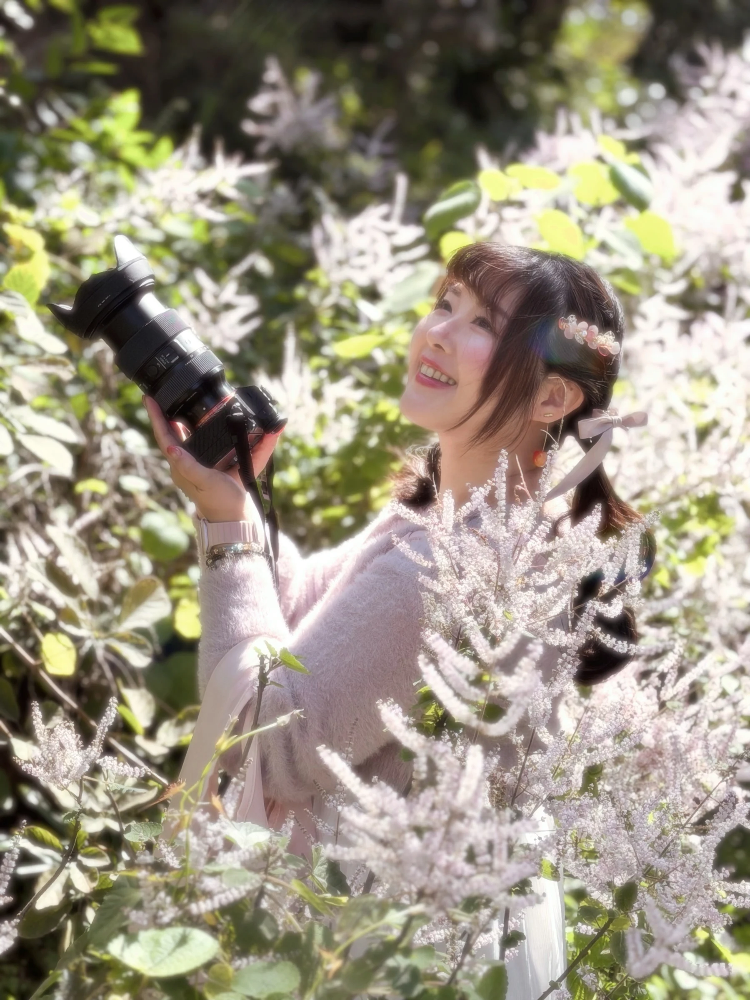

BRAND MARKETING & CONTENT
從文字、影像到跨渠道溝通，將複雜的品牌訊息整理成能被理解、帶動行動的內容。
品牌行銷企劃Taichung, Taiwan
SELECTED PROJECTS
B2B 招募 × 品牌授權
把師資授權制度轉化為清楚的招募訊息，串聯說明會、社群、官網與跨部門執行。
54.5% 意向者付款簽約轉換率
品牌內容 × B2B 溝通
整合品牌理念、會員制度與說明會內容，建立新品牌的第一階段招募溝通路徑。
27 位 確認參與說明會的潛在對象
自有渠道 × 流程建置
把分散的服務資訊整理成圖文選單、訊息流程與客服知識庫，讓品牌溝通更一致。
約 50% 新進服務人員培訓時間縮短
WORDS & VISUALS
社群圖文
以資訊層級、視覺一致性與行動引導，傳達產品賣點、課程或活動訊息。
實現夢想是一個能力
文字文案
婦女節品牌人物貼文系列，透過不同年度的主題與切角，延續創辦人的故事。
觀察日常，找到被看見的切角。
短影音
以社群情境與趨勢為切角，發展貼近品牌的短影音主題。
THROUGH MY LENS
商品與美妝
以自然光記錄飾品的材質與細節。
食物與生活
透過光線與構圖，記錄甜點與生活的柔和片刻。
活動紀實
記錄品牌服務空間與現場細節。

A LITTLE ABOUT ME
我是 Esther，具備美妝產業 B2B 專業通路與 B2C 品牌溝通經驗。我的職涯從影音與社群內容製作起步，逐步延伸至品牌內容策略、整合行銷與小型團隊管理。
 01
01